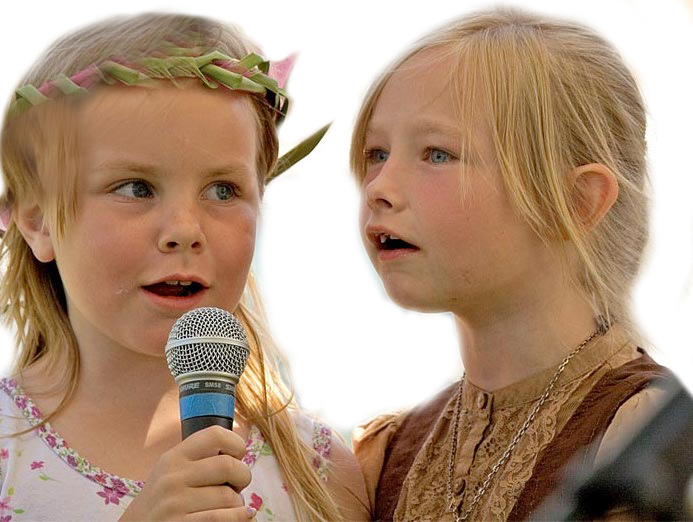
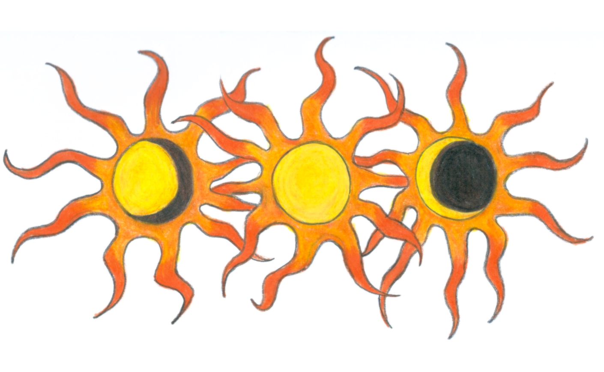
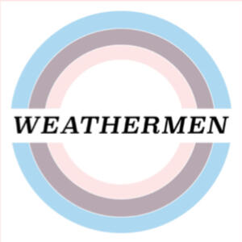
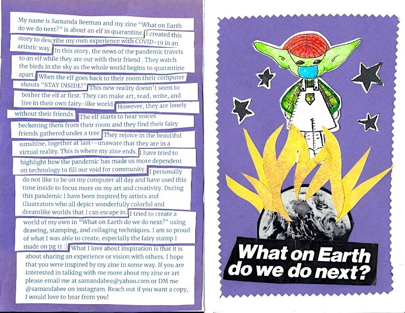

2005 - Samanda Bee (left) began expressing herself at a young age and uses her childhood as inpiration
2014 - Began attending Buchach Colony Highschool

2016 - Samanda Bee created
@SunPhase on etsy to sell handpainted Jackets
2016 - Made her first t-shirt design for the Hog Ranch Radio at Strawberry Music Festival
2017 - Made her second t-shirt design for the Hog Ranch Radio at Strawberry Music Festival
2018 - Began showcasing her art on instagram
@indigolaze_
2018 - Graduated from Buchach Colony Highschool
2018 - Moved to San Francisco to attend the University of San Francisco
2019 - Began seeing live music at local venues and house shows in San Francisco
2019 - In a new relationship

2020 - Worked on website design for Weathermen Records with Korey L. aka Kevin Pesto
2020 - Began selling hand-sewn felt earrings on etsy
2020 - Made a quaranzine titled "What on Earth do we do next?"
